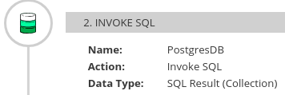

Using the data mapper to process collections
In a flow, when a step outputs a collection and when a subsequent connection that is in the flow expects a collection as the input, you can use the data mapper to specify how you want the flow to process the collection.
When a step outputs a collection, the flow visualization displays Collection in the details about the step. For example:

Add a data mapper step after the step that provides the collection and before the step that needs the mappings. Exactly where in the flow this data mapper step needs to be depends on the other steps in the flow. The following image shows mappings from source collection fields to target collection fields:

In the source and target panels, the data mapper displays
 to indicate
a collection. When a source collection or a target
collection contain only primitive types, the data mapper does not
display collection fields because there is no need to. You can map
from/to the collection itself.
to indicate
a collection. When a source collection or a target
collection contain only primitive types, the data mapper does not
display collection fields because there is no need to. You can map
from/to the collection itself.
When a collection contains more than one kind of primitive type or when it contains at least one complex type then the data mapper displays the collection’s child fields. You can map from/to each field.
When a source field is nested in a number of collections you can map it to a target field that meets one of these conditions:
-
The target field is nested in the same number of collections as the source field. For example, these mappings are allowed:
-
/A<>/B<>/C → /D<>/E<>/F
-
/A<>/B<>/C → /G<>/H/I<>/J
-
-
The target field is nested in only one collection. For example, this mapping is allowed:
/A<>/B<>/C → /K<>/L
In this case, the data mapper uses a depth-first algorithm to iterate over all values in the source. In order of occurrence, the data mapper puts the source values into a single target collection.
The following mapping is not allowed:
/A<>/B<>/C cannot-map-to /M<>/N/O<>/P<>/Q
When {prodname} executes the flow, it iterates over the source collection elements to populate the target collection elements. If you map one or more source collection fields to a target collection or to target collection fields, the target collection elements contain values for only the mapped fields.
If you map a source collection or a field in a source collection to a target field that is not in a collection, then when {prodname} executes the flow, it assigns the value from only the last element in the source collection. Any other elements in the collection are ignored in that mapping step. However, any subsequent mapping steps can access all elements in the source collection.
When a connection returns a collection that is defined in a JSON or Java document, the data mapper can usually process the source document as a collection.